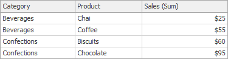
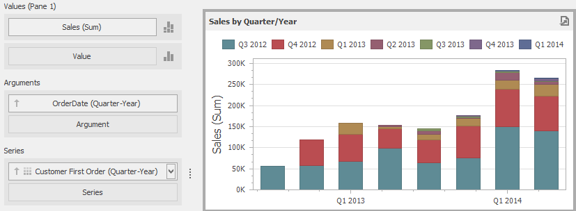
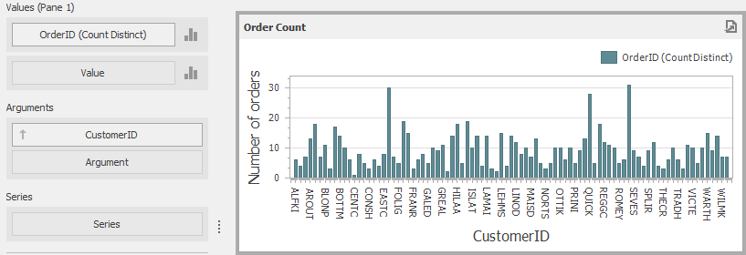

Intermediate Level Aggregations
The Dashboard can aggregate and summarize data on different levels.
- The Query Builder allows you to prepare an underlying data source before analyzing data. You can apply grouping, sorting, summarization and other data shaping operations during data selection.
- Dashboard items aggregate and summarize data at a visualization level using dimensions and measures, respectively. To learn more, see Bind Dashboard Items to Data.
- The Aggr function allows you to introduce an intermediate detail level that is not related to the visualization level. This allows you to create custom aggregations at different levels and combine these aggregations with existing visualizations.
Overview
The Aggr function aggregates and summarizes underlying data using the detail level specified by a predefined set of dimensions and a specified summary function. This function can be used during the creation of a new calculated field in the Expression Editor.
The Aggr function has the following syntax.
Aggr(summaryExpression, dimension1, dimension2, ...)
The first argument is a summary expression calculated against a specific data source field. The next arguments are the set of dimensions whose values are aggregated and used to calculate summaries specified using the first argument. For instance, the following function calculates sums of sales for each product within the specified category.
Aggr(Sum([Sales]), [Category], [Product])
If you created the calculated field that includes the Aggr function and dropped the created field into an existing dashboard item, the Dashboard joins the resulting aggregation with the already displayed data. This means that you can add data with the increased or decreased granularity to the dashboard item. There are two main scenarios.
In the first scenario, an aggregation has a less detailed granularity than visualized data.
In this scenario, an underlying data source contains the list of orders for two categories and corresponding products.

To aggregate this data by individual categories, create a calculated field with the following expression.
Aggr(Sum([Sales]), [Category])The following internal table will be generated for this calculated field.

The sample Grid dashboard item contains more detailed data and includes the following columns: Category, Product and the sum of Sales.

If you drop the created calculated field to the Grid, the sum of sales for each category will be repeated for each Grid row.

For instance, you can use these values later to calculate a contribution of each product to a category’s sales.
An aggregation has a more detailed granularity than visualized data.
To aggregate this data by categories and products, create a calculated field with the following expression.
Aggr(Sum([Sales]), [Category], [Product])The following internal table will be generated for this calculated field.

Drop the created calculated field to the Grid and set its summary type to Min. The Grid will display minimum product sales within each category.

Example 1 - Best/Worst Sales by Year
The following example shows how to display best and worst monthly sales for each year.
In this example, the Chart dashboard item shows the sum of sales by different years. The Sales field is placed in the Values section and the OrderDate (with the Year group interval) is placed in the Arguments section.

To display sales by the best/worst months for each year, create a new calculated field with the following expression.
Aggr(Sum([Sales]), GetYear([OrderDate]), GetMonth([OrderDate]))
Drop this field (Sales by Year/Month in the image below) to the Values section and set its summary type to Max. Then, drop this field to Values again and set its summary type to Min. The Chart will visualize sales by the best/worst months in a year.

Example 2 - Percent of Total
This example will demonstrate how to calculate a contribution of individual quarter sales to year sales.
In this example, the Pivot dashboard item displays the sum of sales by year/quarter. The Sales field is placed in the Values section and the hierarchy of OrderDate fields (with the Year and Quarter group intervals) is placed in Rows.

To calculate a contribution of each quarter to a year sales, do the following.
Calculate totals for each year using the Aggr function by creating the following calculated field.
Aggr(Sum([Sales]), GetYear([OrderDate]))Set the name of the created field to Sales by Year.
Calculate a contribution of each quarter to year sales by creating the following calculated field.
Sum([Sales]) / Max([Sales by Year])Name this field Percent of Total and drop it to Values to see the result.

Example 3 - Customer Acquisition
In this example, a customer acquisition will be evaluated by grouping customers by the quarter/year of their first purchase to compare sales contributions.
The Chart dashboard item below visualizes sales by quarter/year.

The following expression determines the minimum order date (the first purchase date) per customer.
Aggr(Min(GetDateQuarterYear([OrderDate])), [CustomerID])
Set the name of the created field to Customer First Order and drop this field to the Series section to see the result.

Example 4 - Customer Order Count
In this example, you will learn how to divide customers count by the number of orders they made.
The Chart below shows the number of orders that is made by each customer.

The calculated field below evaluates the number of unique orders made by each customer.
Aggr(CountDistinct([OrderID]), [CustomerID])
Set the name of this field to Customer Order Count and drop this field to arguments. Then, drop the CustomerID field to Values and change its summary type to Count Distinct.

The Chart will show the number of customers that made a specific number of orders.
Example 5 - Best Product Sales by Year
This scenario requires the use of nested aggregations. In this example, the dashboard will show products with the best sales in a year along with sales values.
The initial Grid dashboard item shows sales of all products by year (the OrderDate column with the Year group interval and the Sales column). The data source also contains the ProductName field.

To implement this scenario, perform the following steps.
Create the calculated field that will return product sales for individual years.
Aggr(Sum([Sales]), GetYear([OrderDate]), [ProductName])Set its name to Product Sales by Year.
Create the calculated field that will return maximum sales values.
Aggr(Max([Product Sales by Year]), GetYear([OrderDate]))Set its name to Max Product Sales by Year.
Finally, create a calculated field returning the name of the product with the best sales and a corresponding sales value.
Iif([Max Product Sales by Year] = [Product Sales by Year], [ProductName] + ' ($ ' + [Product Sales by Year] + ')', null)Specify the name as Best Sales Product. Then, drop this field to the Columns section to see the result.